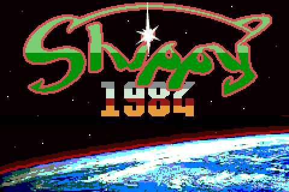
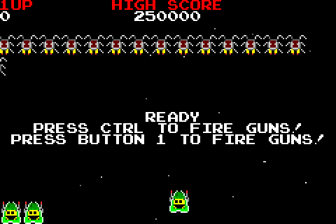
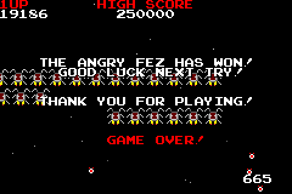

STORY
The Angryfez Army and their minions have pointed the ultimate battle at earth! Only Happyfez can save the day!

CONTROLS
1/2 - Starts 1 player or 2 player
Player 1
Ctrl/Gamepad Button 1 - Fires bullet, starts game, and performs actions
Backspace/Gamepad Button 2 - Pauses game and deletes initials in initial entry screen
Arrow Keys/Gamepad Direction Pad - Moves shippy up, down, left, and right
Player 2
Q - Fires bullet, starts game, and performs actions
S - Pauses game and deletes initials in initial entry screen
R/F/D/G - Moves shippy up, down, left, and right

TIPS AND TRICKS
* IF YOU RUN OUT OF HAPPYFEZ LIVES YOUR GAME IS OVER!
* Happyfez lives are shown in the bottom left of the screen!
* The more accurate you are with shots, the higher your ACCURACY bonus.
* The faster you play, the more bonus you get for TIME ATTACK.
* You can shoot the green orbs fired from the blue enemy.
* If you shoot a fezbomb from red enemy, it turns to a green orb.
* You earn an extra life at 50k, 100k, 200k, etc. points.
* Practice, Practice, Practice!
Credits
Shippy1984 copyright 2004 by CrappyGames.
Game sprites and code by Ryan Broomfield 2004.
Music by neoblaze 2004.
Title screen, font, and website logo by kaizrsze 2004.
2nd player and SDL2 port by Dennis Payne
Developer Notes
Source code is available on
GithubThe allegro version uses dumb for sound (click
here to visit)
The sdl version uses sdl_mixer for sound (click
here to visit)